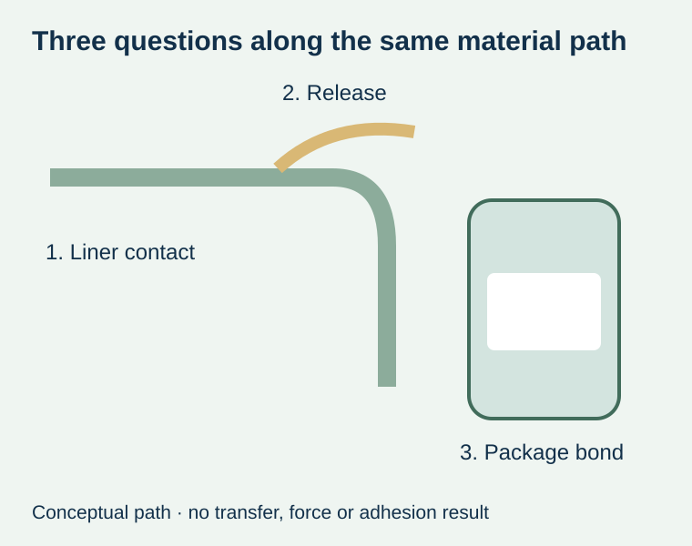
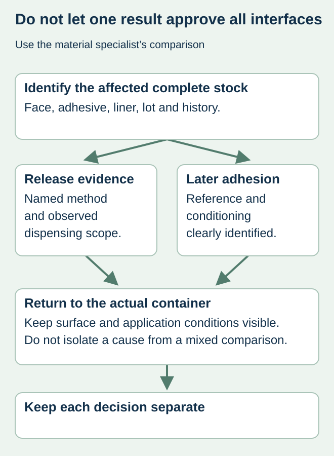

The food-label roll peels from its backing normally, but labels from that supply do not bond as expected in a controlled comparison. It is tempting either to dismiss the liner because release looks normal or blame silicone transfer immediately. Both shortcuts exceed the evidence.
Treat release behavior, adhesion after liner contact and the final container bond as separate questions. Identify the complete roll and the observed difference before asking the stock supplier to investigate. Subsequent-adhesion evidence can be relevant without proving that the liner caused the complaint.


A separate evidence category exists for a reason
FINAT’s technical-method overview lists subsequent adhesion in its quality-of-silicone-coated-substrates methods separately from release-force measurements. The supplier or testing party should identify the appropriate current method and reference comparison. The overview is not a recipe for an improvised tape test or a statement that every release system transfers contamination.
A release result concerns separating the adhesive construction from the backing under defined conditions. A later adhesion result asks another question about the adhesive after its relevant history. Neither independently approves a curved, damp or oily food container. The actual package evidence still needs its own conditions and interpretation.
Preserve the construction, history and comparison
| Evidence group | Identify or request | What it does not establish alone |
|---|---|---|
| Supplied roll | Face, adhesive, liner, lot and relevant age/history | Which component caused a difference |
| Release observation | Method or observed dispensing behavior and conditions | Later bond performance is unchanged |
| Subsequent-adhesion report | Named method, reference, contact/conditioning and result basis | Every actual food container is qualified |
| Container observation | Surface, application, time and intended handling | A liner mechanism rather than a surface/application issue |
| Alternative sample | All changed components and history | Only the liner changed because it looks similar |


Ask for a meaningful controlled comparison
The material specialist should decide which reference and comparison are technically appropriate. Purchasing can request traceable identities and relevant conditions without prescribing a method. If the reference adhesive, age or surface differs, retain that limitation rather than calculating a persuasive percentage from unlike results.
For a hypothetical condiment line, two stocks may share the same printed face while differing in liner, adhesive or storage history. Better bonding from the second stock does not isolate the liner unless the evidence supports that comparison. Keep unused material from the actual affected rolls available under the investigator’s instructions.
Avoid making the container disappear from the investigation
A standard-surface comparison can help the supplier study the material system. The brand also needs to understand what happens on its actual jar, tub or pouch. Record application moisture, contamination, temperature and the relevant use interval where known. Do not silently change those inputs while comparing roll samples.
The release guide addresses method and unit comparison for the dispensing interface. The liner-choice guide addresses the complete web proposal. This article adds the intermediate evidence about adhesion after liner contact, not another universal ranking of paper versus film backing.
Make a bounded purchasing decision
Ask the supplier to state what its evidence supports, which explanation remains uncertain and which proposed construction is actually available. If a replacement liner or complete stock is offered, identify all changes and the relevant verification before approving it. A normal release number should not close an unresolved bonding concern, and a bonding concern should not become an unsupported accusation about silicone cure.
Keep commercial replacement, technical findings and package release as distinct recorded outcomes. The final purchase specification should identify the accepted complete construction and use conditions rather than an unexplained requirement for “better liner.”
Discuss the unresolved label requirement
Provide face/adhesive/liner identities, roll and age references, the observed release and bonding behavior, and actual container conditions. Ask the responsible supplier whether liner-related adhesion evidence is relevant. Prepare a label specification inquiry. The contact page opens an email draft and lists email or WhatsApp for attachments. Supply, proof options, testing, pricing and timing require project confirmation.